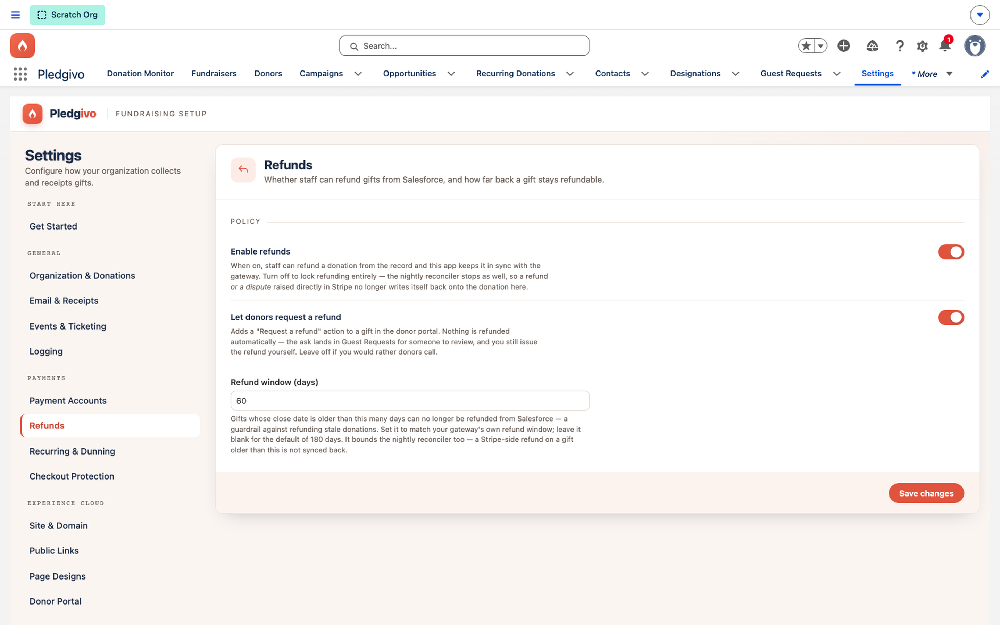
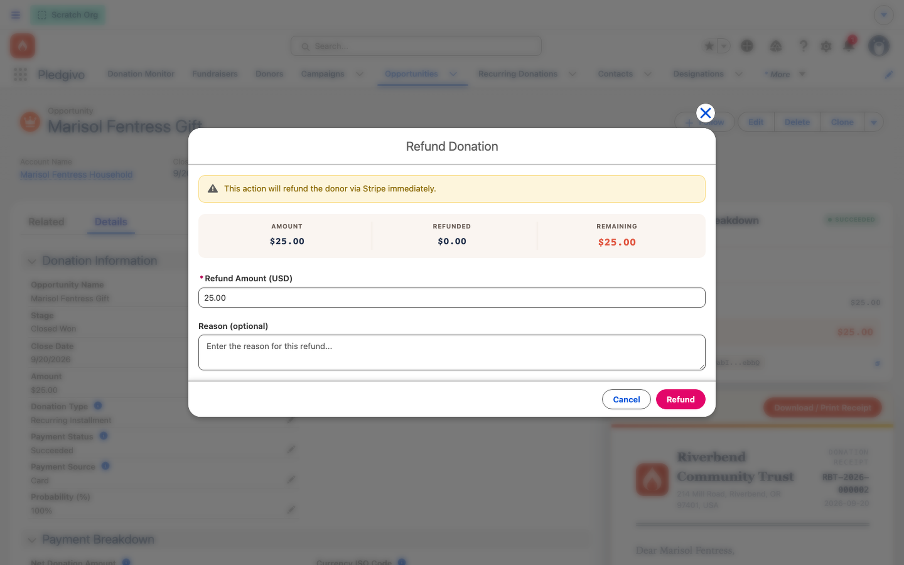

Guides
Process a refund#
Refunds can be issued from inside Salesforce or directly in the Stripe dashboard — both are reconciled back to the same Opportunity on the same hourly job.
Watch it first#
The three fields that decide who may ask for a refund and for how long. Note that the panel presents Enable refunds while the field behind it stores the inverse, which is why the read-back after Save is worth watching.
Before you start#
Refunds are gated by a custom permission (Process_Refunds), included in Fundraising_Admin
by default. Confirm the org-wide refund switch is on: Settings → Payments → Refunds — the
"Enable refunds" toggle should be on. (Under the hood this is stored as an inverted field,
Refunds_Disabled__c, but the panel presents it as a normal, positive-framed toggle — you
don't need to think about the inversion.) That panel also sets the refund window — how many
days after the original gift a refund can still be issued (180 by default).

**What it shows.** The Refunds panel — the "Enable refunds" toggle, the "Let donors request a refund" toggle, and the Refund window (days) field, each with helper text explaining what it controls. These are the org-wide switches; they're separate from the per-Opportunity Refund Donation action below.
Issue a refund from Salesforce#
- Open the donation's Opportunity record.
- Use the Refund Donation action (visible only to users with
Process_Refunds). - Choose full or partial, and confirm.

**What it shows.** The Refund Donation quick action open on an Opportunity, with a Refund Amount field pre-filled with the full remaining refundable amount (edit it down for a partial refund) and a destructive "Refund" button.
This calls RefundService, which issues the refund through Stripe and updates the
Opportunity's refund fields immediately — you don't have to wait for the reconciliation job to
see it reflected.
When the donor asked for it#
Donors can request a refund from their own portal, if you turn on Let donors request a refund in the same Refunds panel. It is off until you switch it on. Nothing is refunded by asking — each request lands in the Guest Requests tab at Awaiting Review, and the gift's owner and your reply-to address are emailed.
When you open Refund Donation on a gift that has a request waiting, the donor's own words are quoted at the top of the panel, above everything else, with the date they asked and the request's name.
You then have two ways to answer it, and they are not symmetrical:
- To approve — issue the refund here as normal. That closes the request automatically, marks it Completed, and records that it was approved for the donor to see on their portal. You do not touch the Guest Request record at all.
- To turn it down — open the named Guest Request record and set its Status to Declined. Put the reason in Message to the donor; that is the text the portal shows them. The Admin note field is the internal counterpart and is never shown.
Closing the request never issues a refund, and issuing one never leaves the request open
The automation runs in one direction only. Marking a request reviewed moves no money — the refund is always a deliberate act on the donation record. But the reverse is wired up, so a refunded gift can't leave a donor staring at a request that still says it is waiting.
If the auto-close ever fails, the refund still stands. The money moved at Stripe first, and the request is simply left for you to close by hand.
See Guest requests for the queue itself, and The donor portal for what the donor sees.
Refunds issued outside Salesforce#
If a refund or a chargeback is initiated directly in the Stripe dashboard (or by Stripe itself,
in a dispute), Salesforce doesn't see it immediately — there's no webhook pushing that event
in. Instead, an hourly RefundReconciliationBatch (RefundReconciliationScheduler) re-checks
recent Opportunities against Stripe and picks up:
- Refunds issued outside Salesforce
- Disputes/chargebacks opened against a charge, and their full lifecycle (opened, evidence needed, won, lost)
The reconciler reads the cumulative refunded amount for a charge, not just the most recent refund event — a PaymentIntent by itself doesn't expose a running refunded total, so the reconciler expands the PaymentIntent's latest charge to get it. This matters if a donation is partially refunded more than once: the Opportunity's refund total always reflects the true cumulative amount, not just the last refund seen.
What updates on the Opportunity#
| Field group | Reflects |
|---|---|
| Refund amount / status | Total refunded to date, in sync whether the refund happened in Salesforce or in Stripe |
Dispute fields (Dispute_*) |
Current dispute status, if a chargeback has been opened |
What the donor is told#
The donor is emailed automatically once the refund is recorded, using the Refund Notification template (Setup → Email Templates → Fundraising folder). It states the amount refunded and the date, and tells them the refunded portion is no longer tax-deductible — the original receipt they were sent is otherwise still sitting in their inbox reading like a valid tax document for money they no longer have. The email links back to the donor portal, where the receipt now shows the refund reflected.
Edit the template's wording and branding like any other — it's a standard Salesforce email template, and it merges the org name, logo, address, and receipt footer from your Settings.
Both refund paths send it: a refund you issue from Salesforce, and one the hourly reconciler picks up from Stripe. Three cases deliberately do not send it:
- A re-run of the reconciler over an already-reconciled refund. The email is triggered by the refunded total increasing, not by the gift merely being refunded — otherwise every hourly run would email the same donor about the same refund again.
- A lost chargeback. The gift is reversed exactly like a refund, but the donor raised the dispute with their own bank and already knows. A "your gift was refunded" note would be redundant, and tone-deaf in a case you may have contested.
- A gift with no donor Contact — an offline or imported row with nobody to address.
The refund reason you type when issuing the refund is stored on the Opportunity but is not included in the donor's email, so you can write internal notes there freely.
The email never blocks the refund
Sending happens after the refund is recorded, and a failure is logged rather than raised. The money has already moved at Stripe by that point, so a mail-quota problem or a deleted template can never turn a successful refund into an error — but it does mean a failed send isn't retried. Check the Diagnostic Logs tab if a donor says they were never told — see Monitor donations and read the logs.
Related#
-
Donations & payments
How a gift's payment fields work before a refund ever happens.
-
Monitor & diagnose
Confirm the refund landed, and read what the app logged if it didn't.